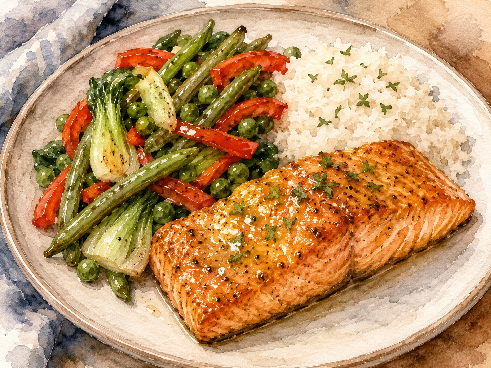

Maple Mustard
Baked Salmon
With pan-seared vegetables and rice — serves 2 with leftovers

This is a complete, nourishing meal built around salmon — one of the best low-histamine proteins you can cook. Alaska wild caught salmon is an excellent choice, and frozen works beautifully here. The oven does most of the work, giving you time to get the rice and vegetables going on the stovetop. Everything comes together at once, and the maple mustard glaze ties it all into something that genuinely feels like a restaurant plate.
The sauce is three ingredients: maple syrup, Dijon mustard, and coconut aminos. Mixed together cold and drizzled over at the end, it keeps things bright and fresh. If using fresh salmon, cook it the same day you buy it. If using frozen, it goes straight from the freezer into the oven — no thawing needed. Either way, freeze any leftovers right away to keep histamine levels low.
Ingredients
The Salmon
- 32 ozsalmon filet, fresh or frozen (Alaska wild caught recommended)
The Rice
- 1 cupbrown rice
- 2 cupswater
The Vegetables
- 1 cupgreen beans, prepped
- 1 cuppeas
- 1 cupred bell pepper, chopped
- 1 cupbok choy, chopped
- Drizzleolive oil
The Maple Mustard Sauce
- 1 tbsppure maple syrup
- 2 tbspDijon mustard
- 3 tbspcoconut aminos
For the Pan
- Drizzleolive oil (for the baking pan)
🌿 Histamine-Safety Notes
Frozen salmon — especially Alaska wild caught — is an excellent low-histamine choice, since it's flash-frozen at sea before histamine has a chance to build. If using fresh salmon, buy it the same day you plan to cook it. Either way, cook and serve immediately. Coconut aminos are a great low-histamine alternative to soy sauce. Leftovers should be frozen right away; refrigerating fish overnight can raise histamine levels, though some people tolerate next-day fridge storage. Know your own threshold.
Instructions
- Preheat the oven to 425°F.
- Start the rice. Place 2 cups of water in a pot and bring to a boil over high heat. Rinse 1 cup of rice well under cold water. Once the water is boiling, add the rice, reduce heat to low, cover, and set a timer for 45 minutes.
- Prepare the baking pan. Line a glass Pyrex pan (or similar oven-safe dish) with aluminum foil for easy cleanup — or skip the foil if you prefer. Drizzle a little olive oil over the foil or the bottom of the pan.
- Add the salmon. Place the salmon filet in the prepared pan and set aside until the oven is fully preheated.
- Prep your vegetables while the oven heats up.
- Bake the salmon. Once the oven is preheated, place the salmon inside. If thawed, bake for 25–30 minutes and begin checking with a meat thermometer at the 20-minute mark. If cooking from frozen, bake for 35–40 minutes and begin checking at the 30-minute mark. Salmon is done when it reaches 145°F internally.
- Cook the vegetables. While the salmon and rice are going, heat a skillet over medium heat for 3 minutes. Drizzle in a little olive oil, then add all the prepped vegetables. Cook for 5–10 minutes depending on your preferred texture — shorter cooking time keeps them with a little firmness, longer makes them softer. Set aside with the lid slightly ajar to release steam while staying warm.
- Make the sauce. Stir together the maple syrup, Dijon mustard, and coconut aminos in a small bowl until combined. Set aside.
- Finish the rice. After 45 minutes, the rice is done. Keep the lid on to hold the heat.
- Serve immediately. When the salmon is finished, serve right away. Dish up ½ cup rice, 1 cup vegetables, and 8 oz of salmon per plate. Drizzle generously with the maple mustard sauce and serve right away.
Tips & Variations
- If cooking from frozen, plan for 35–40 minutes total and start checking the internal temperature at the 30-minute mark. Thawed salmon typically takes 25–30 minutes with a first check at 20 minutes.
- The sauce is mixed cold and added at the end — this keeps the maple flavor bright and prevents it from caramelizing in the oven.
- Coconut aminos can be found at most grocery stores or online. Low Sodium Coconut Aminos by Coconut Secret is a widely available brand.
- You can swap in any low-histamine vegetables you have on hand — zucchini, asparagus, and broccoli all work well here.
- Freeze leftovers immediately in individual portions so they're easy to thaw for future meals. If you do refrigerate for next-day eating, make sure it's well-sealed and consume within 24 hours.